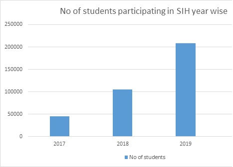

A country with 1.3 billion population and in that more than 50 percent of the population were young minds, such a county is called INDIA. Even though we have 600 million young people, our country is not good at innovation. When compared to countries Japan and South Korea these are smaller than our country but their pattern of innovation per year is in lakhs whereas in India it was only thousands. To make equality in technology our honorable Prime Minister Narendra Modi has introduced an innovative idea called “Smart India Hackathon”. After starting this initial idea in 2017, a revolution is begun in Indian technology.
This hackathon has become the world’s biggest hackathon in 2019. In the year 2019 only many private organizations and NGOs have shared their problems for finding a solution to it. As the hackathon changes many one’s life it also changed my life. In the year 2020 SIH decide to change its way of participating in “SIH2020” that is planned to conduct an internal hackathon in every institution and the best of the internal hackathons is to participate. This idea is a fantastic one that abolishes the fake only a quality person as allow to participate.
This idea also makes newcomers participate in internal hackathons, so that the student community may be getting stronger. Let take an example of our college internal hackathon, where many have participated in that event and some of them were selected. I too participated in that event. For participating in that event I first saw what are the problems are listed in the SIH portal, so I regularly visited the page before this internal hackathon held. After seeing the problems I prepared a mini list in what field that I good, who are my teammates, what type of problems should I take, which will be easier or though one. When I make this list I feel that my planning skills regarding make projects are increased and also doing projects in SIH is equal to learning a lot.
The SIH makes the student community always engage with technology. They provide many standard technologies related videos on their YouTube channel. So I subscribe to their channel, from them only I learned python even though I have python in semester 1. My teachers taught as book-oriented were as SIH teach me differently. From SIH my programing skills also increased a lot. They also make many useful webinars to the student community. In that one I watched a webinar called Building IoT Apps for Cisco Access Points. It was presented by Rafael Vicente, product manager by cisco. It was useful to me for designing an IoT app and I have an idea to build an app for a problem in SIH2020. I also organize a team by full filling all criteria by SIH. We also got selected by our college internal hackathon so, with more curiosity, we upload our idea in the SIH portal and waited for shortlisting. We started a little bit work on in that time itself but a person can’t succeed in all-time at any time he may be loose, thus way my team is also didn’t shortlisted in SIH2020
It made me sad when I realized that life is like a mountain it has both slopes and height so I keep on trying on the upcoming hackathon. Many things I learned in the period of submitting my idea in the SIH portal. Some of them are leadership quality, Presentation techniques, Product building techniques, and many more. The leadership talent is increased by forming and running of a successful team and successfully guide my teammates. In sih2020 they made presentation slide only with 3 slides it is hugely difficult for students for making a PPT with all details include of it and also by shortlisting through internal hackathons the students get loose their fear on presenting their ideas to juries and they build confidence for presenting in the final round.
SIH indirectly guides the students to fulfill market needily. It is helpful for the company too. Before SIH companies require students based on their marks in the semester and other criteria. An interesting incident has happened company’s like Wipro TCS CTS select who does not have current arrears but for the first time in our college a person is selected with more than 5 arrears. This is because of SIH the guy who participated and won SIH in some ministry. The company noticed him that he have the skill and got selected him that’s the power of SIH. It telecasting the talent of the young minds to the world. It just an example in our college the same way it may occur in different colleges. Every year student participation in SIH is increased, the following graph tells how students’ community is engaged in participating in the world’s biggest hackathon.

The SIH is not the only event it is a life-changing point to many youngsters in our nation. The thought of making innovation makes a country become a developed nation. APJ Abdul Kalam on the vision of 2020 maybe succeeds with Smart India Hackathon.